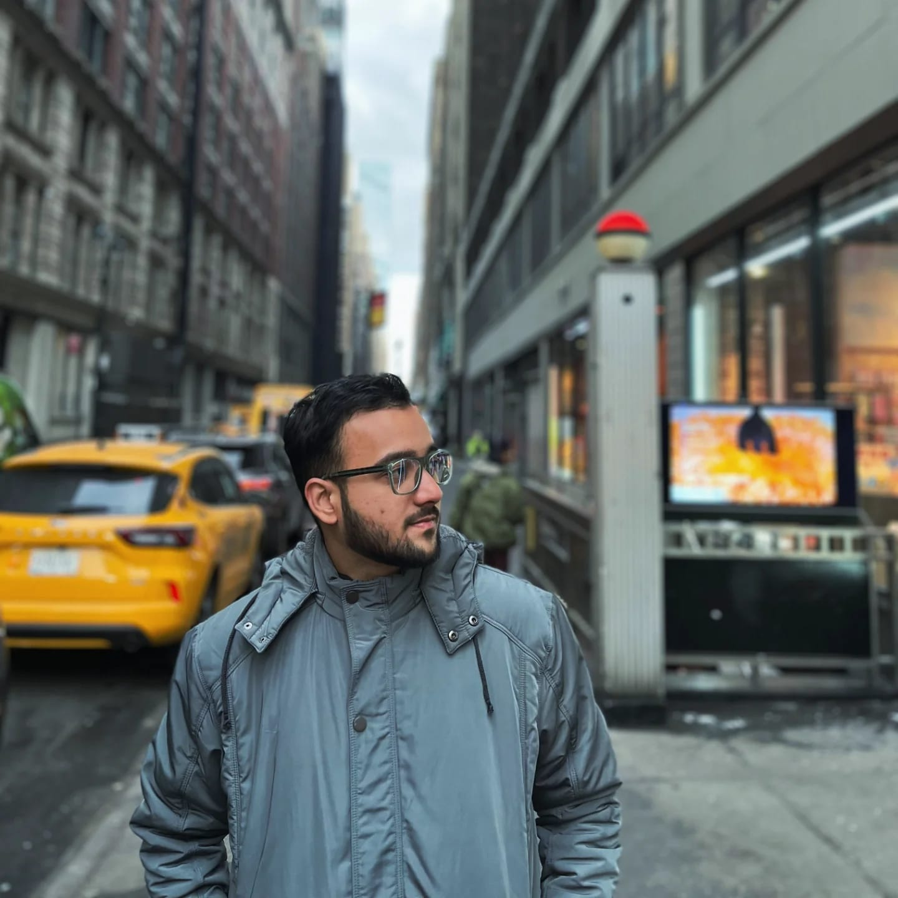

I'm Imad Ali Syed, blending technology, creativity, and problem-solving.
A passionate Cybersecurity Professional and Web Developer with a love for problem-solving and innovation. With a strong foundation in IT and hands-on experience in ethical hacking, I enjoy exploring the intersection of security, technology, and creativity. Whether it’s safeguarding systems, building sleek web applications, or tackling complex challenges, I’m always driven to push boundaries and keep learning. Outside of tech, I’m curious, adaptable, and constantly exploring new ways to grow — because to me, every challenge is just another puzzle waiting to be solved.
Learn more about me →
Aug 2026 – Present
City College of New York, New York, NY
Teaching ENGR 10200 (A Data Science and Statistical Approach to Programming).
Aug 2026 – Present
NYSTEC, New York, NY
Supporting cybersecurity and IT consulting engagements for New York State government clients, contributing to risk assessments and technical documentation.
Sep 2025 – Present
LaGuardia Community College, Long Island City, NY
Courses taught:
Mar 2025 – May 2025
Cybersecurity Department, City College of New York
Jan 2025 – Dec 2026 (Expected) | Current CGPA: 3.6
City College of New York, New York, NY
Graduated: Jun 2024 | CGPA: 8.05
Osmania University, Hyderabad, India
May 2023 – Jun 2023
Datapoint Info Solutions, Hyderabad, India
Follow my journey in cybersecurity and web development, and let's grow our network.
View My LinkedIn ProfileLet’s connect! I’m open to opportunities in Cybersecurity, Web Development, and related fields.